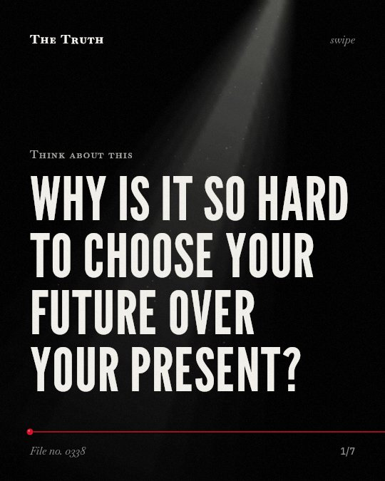

Think about this
Why is it so hard to choose your future over your present?

Your brain values consumption over effort.
Present bias for real consumption is stronger than for real effort. This makes it harder to choose long-term goals over immediate rewards.
Established. Several studies combined, or official data. The evidence is mixed.
What the research found
Present bias for real effort is weaker than for other rewards such as real consumption.
“We find that present bias for real effort, although stronger than for money, is weaker than for other rewards such as real consumption.”
Meta-analysis, 2026. Cheung et al., Management Science.
Hyperbolic discounting plays a central role in triggering investors' impulsive panic selling behavior, which is driven primarily by fear of potential losses.
“The findings reveal that hyperbolic discounting plays a central role in triggering investors' impulsive panic selling behavior, which is driven primarily by fear of potential losses.”
Experiment, 2024. Lal et al., Behavioral Sciences.
Individuals who meet criteria for an addictive disorder show a greater delayed reward discounting (DRD) than control groups.
“Conclusions These results provide strong evidence of greater DRD in individuals exhibiting addictive behavior in general and particularly in individuals who meet criteria for an addictive disorder.”
Meta-analysis, 2011. MacKillop et al., Psychopharmacology.
Many unhealthy behaviors become habitual, and if health goals then change, habitual behavior can still arise in response to environmental cues.
“Under this framework, while discounting of delayed health may contribute to the initiation of unhealthy behavior, with repetition, many unhealthy behaviors become habitual; if health goals then change, habitual behavior can still arise in response to environmental cues.”
Systematic review, 2014. Story et al., Frontiers in Behavioral Neuroscience.
Personalised care planning leads to improvements in certain indicators of physical and psychological health status and people's capability to self-manage their condition when compared to usual care.
“AUTHORS' CONCLUSIONS: Personalised care planning leads to improvements in certain indicators of physical and psychological health status, and people's capability to self-manage their condition when compared to usual care.”
Review, 2015. Coulter et al., Cochrane Database of Systematic Reviews. This shows a link, not a cause.
Habits override your intentions.
Unhealthy behaviors become habitual. Even if you change your goals, your brain may still respond to environmental cues with the old behavior.
Your choices are not always yours.
That may be why you struggle to plan for the future. Your biology prioritizes the immediate reward, while your environment reinforces old habits.
This part is our reading of the evidence, not a finding.
The reach for the snack.
You sit at your desk at 3 p.m. You know you want to be healthier. Your hand reaches for the bag of chips anyway because it is right there.
The honest summary
The evidence confirms that temporal discounting and present bias contribute to impulsive and habitual behaviors, but it does not specifically address long-term planning for climate change.
The sources provide evidence on health behaviors and financial markets but do not contain any data regarding climate change.
Which habits are yours, and which are just your environment?
Sources
- Giles W. Story, Ivo Vlaev, Ben Seymour et al. (2014). Does temporal discounting explain unhealthy behavior? A systematic review and reinforcement learning perspective. Frontiers in Behavioral Neuroscience. Systematic review, cited 343 times.
- MacKillop J, Amlung MT, Few LR, Ray LA, Sweet LH, Munafò MR (2011). Delayed reward discounting and addictive behavior: a meta-analysis. Psychopharmacology. Meta-analysis, cited 730 times.
- Sumeet Lal, Trinh Xuan Thi Nguyen, Aliyu Ali Bawalle et al. (2024). Unraveling Investor Behavior: The Role of Hyperbolic Discounting in Panic Selling Behavior on the Global COVID-19 Financial Crisis. Behavioral Sciences. Experiment, cited 24 times.
- Stephen L. Cheung, Agnieszka Anna Tymula, Xueting Wang (2026). A Meta-Analysis of Quasi-Hyperbolic Discounting. Management Science. Meta-analysis, cited 7 times.
- Angela Coulter, Vikki Ann Entwistle, Abi Eccles et al. (2015). Personalised care planning for adults with chronic or long-term health conditions. Cochrane Database of Systematic Reviews. Review, cited 787 times.
Also read for this file, not quoted
- Vlaev et al. (2019). Changing health behaviors using financial incentives: a review from behavioral economics.
This file was researched and drafted by software, then checked by rules a model cannot talk its way around: each quote above was matched word for word against the paper, and every number had to appear in it. How files are made.